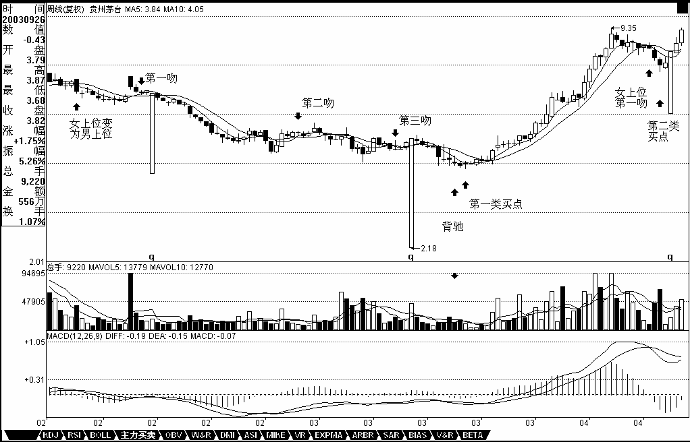
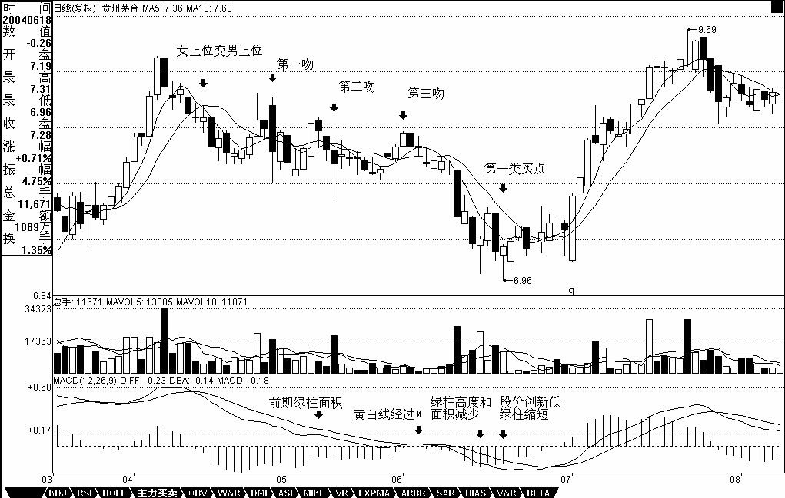
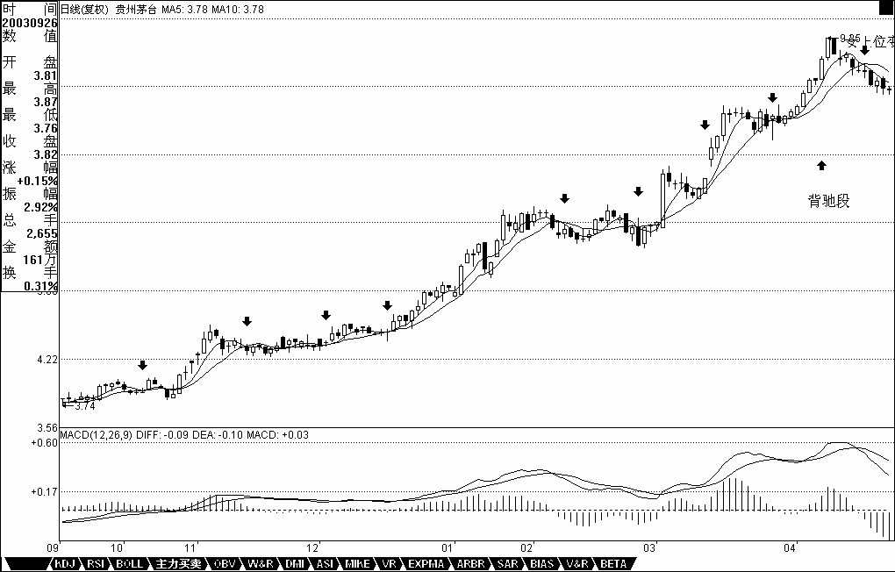

0398 - 教你炒股票14：喝茅台的高潮程序！¶
日期：(2006-12-05 11:35:20) 分类：[时政经济（缠中说禅经济学）]
前面说了很多理论上的东西，现在用一个实际的股票来说明一下具体的用法。就用茅台吧，边喝茅台边上课。这里先假设所有看的人都能找到茅台上市以来的周线和日线图。前面说过两条均线间“吻”的三种方式，其中的湿吻是最明显的缠绕例子，而飞吻和唇吻是缠绕的特殊例子，在均线操作系统中所指的缠绕，包括这三种吻。而从实际的比例看，湿吻出现的几率是最大的，但在长期均线系统中，例如周线、月线等，唇吻的例子比例也很大。先复习一下相关定义：
飞吻：短期均线略略走平后继续按原来趋势进行下去。
唇吻：短期均线靠近长期均线但不跌破或升破，然后按原来趋势继续下去。
湿吻：短期均线跌破或升破长期均线甚至出现反复缠绕，如胶似漆。
女上位：短期均线在长期均线之上。
男上位：短期均线在长期均线之下。
第一类买点：用比较形象的语言描述就是由男上位最后一吻后出现的背驰式下跌构成。
第二类买点：女上位第一吻后出现的下跌构成。

【编者注：此图可能是当时的网友补充的】
现在，先打开茅台的周线图，在茅台快6年的周线图上，用5周与10周均线构成的买卖系统，只有第一类和第二类买点各一个，可见，在周线图上，按均线系统构成的买点并不常见，一旦出现必须珍惜。仔细分析：2002年4月19日那周，茅台进入男上位，其后在2002年7月9日那周进入男上位的第一吻，前面已经说过，这第一吻后的下跌一般不会构成买点，必须是至少第二吻以后。其第二吻出现在2003年2月14日那周，是典型的湿温，其后在下跌并没构成背驰，不符合第一类买入点的原则。然后在2003年6月27日那周构成第三吻，是一个不太强烈的湿吻，其后的下跌就出现了明显的背驰走势，在MACD图上，绿柱子比上一次的明显缩短，而低位却低于上次绿柱子出现时的低位。如何判断背驰走势结束，最简单的就是当绿柱子缩短，而股价继续创新低，这次，明显地发生在2003年9月26日这一周，意味着底部出现，第一类买点构造完成，可以大举介入了。
第一类买点出现后，茅台也正常地改变体位，进入女上位，一直到2004年6月4日那周出现女上位后的第一吻，其后的下跌构成周线上的第二类买点。这里有一个很重要的技巧，就是第二类买点如何精确地把握，由于在周线女上位后第一吻的调整不构成明显的下跌走势，因此对于第一类买点的背弛走法就无法出现，这时候就要降低K线级别，从日线图上寻找最佳买点，这里给出一个缠中说禅买点定律：大级别的第二类买点由次一级别相应走势的第一类买点构成（该定律是有专利的，发明权一定要明确，这一点必须明确，否则以后本ID不会再说任何定律了，该定律一定没有任何人发现过，其他本ID已发现的定律也一样，哪天本ID心情好再说几个，但前提是不能让本ID发现有盗版的，各位也应该和本ID一起监督）。例如，周线上的第二类买点由日线上相应走势的第一类买点构成。有了这个缠中说禅买点定律，所有的买点都可以归结到第一类买点。
对于茅台，2004年6月4日那周出现女上位后第一吻，对应在日线图上是明显的男上位走势，该走势其中出现三次吻，分别在2004年4月29日、5月18日、6月1日，都是典型的湿吻，但前两次其后的下跌都没有出现背驰，只有第三次，出现明显的背驰性走势，6月18日创下低点后，MACD的绿柱子明显比前面的要缩短，这就构成了日线上的第一类买点，而这个买点，在周线上就是第二类买点。注意，后面由于除权，价位上似乎比这个要低了，其实并没有。

【编者注：此图可能是当时的网友补充的】
站在周线角度，茅台的买点就这两个了，而其后的卖点至今没出现，如果当时根据这两个买点介入的，目前应该继续持有，直到卖点出现。但是，这是一种针对特别大资金的玩法法，例如50亿以上，对于资金量一般的，例如10亿以下的，有一种增加资金流动性的玩法，就是充分利用日线的卖点回避大的调整，虽然这种调整站在周线的角度不一定要参与。缠中说禅短差程序就是：大级别买点介入的，在次级别第一类卖点出现时，可以先减仓，其后在次级别第一类买点出现时回补。对于周线买点介入的，就应该利用日线的第一类卖点减仓，其后在第一类买点回补。对于茅台，分析如下：
在周线2003年9月26日这一周根据第一类买点介入的，其后的女上位出现九次吻，前八次都没构成背驰走势，而第九次出现在2004年3月26日，其后的上涨出现明显背驰，4月8日的高位对应的MACD红柱子并没有相应创出新高，这就构成日线上的第一类卖点。其后的第一类买点出现在6月18日，然后的第一类卖点出现在10月27日，然后第一类买点出现在12月22日，下一个第一类卖点出现在2005年4月26日，接着的第一类买点出现在2005年12月13日，下面的第一类卖点至今没出现，也就是说，即使是站在日线的角度，2005年12月13日介入的茅台，根本就没有出现卖点，唯一正确的就是坚决持有。当然，如果资金量小，不是按周线的，第一类、第二类买点都是最多按日线的，就可以相应在30分钟等更小的级别内找到第一类卖点而弄出短差来，那就太细了，各位自己研究去。

【编者注：此图可能是当时的网友补充的】
要把握好这个均线构成的买卖系统，必须深刻理解缠中说缠买点定律：大级别的第二类买点由次一级别相应走势的第一类买点构成。如果资金量不特别巨大，就要熟练缠中说禅短差程序：大级别买点介入的，在次级别第一类卖点出现时，可以先减仓，其后在次级别第一类买点出现时回补。这样才能提高资金的利用率。注意，该定律和程序都要注意版权，任何人都可以用，也不收任何版权费，但这个版权必须要明确，否则本ID心情不好，就没兴趣再说任何定律、程序了。严惩所有企图盗版去招摇撞骗的人。各位要多看图，根据相应的资金量以及性格去定自己的操作级别，然后具体是熟练，否则就是纸上谈兵，毫无意义了.
本文评论获取自靠谱的方式，包含疑似禅师的回复数量：[29]
UID:[1215172700] 昵称：缠中说禅 日期：(2006-12-05 11:53:53)
本ID对大盘的建议继续有效，引用如下：该结论继续有效
缠中说禅 2006-11-29 15:14:38
从大盘健康的角度说，本ID给大盘的建议是：先深成指突破6103点的历史高位，然后上海跟上，突破以后再调整，这样更健康。不知道大盘有没有兴趣听本ID的意见了
UID:[0] 昵称：[匿名] MM 日期：(2006-12-05 12:02:18)
晕,今天怎么这么早?
UID:[1215172700] 昵称：缠中说禅 日期：(2006-12-05 12:04:22)
注意，本ID从来没有参加过其他任何圈子，任何以本ID名义参加的圈子都与本ID无关，本ID和发现在新浪中有一个博客和本ID名字完全一样的，但其地址不同，所以各位请注意，不要混淆了。本ID只有自己刚建立的一个圈子，这个圈子欢迎所有人把自己的文章贴在上面互相交流。除此之外，一切与本ID无关，特此声明。
UID:[1215172700] 昵称：缠中说禅 日期：(2006-12-05 12:06:44)
[匿名] 外科医生 2006-12-05 11:58:23
小妹，这次接下来的调整怎么判断呢？我太笨了，呵呵努力学习中
===========
比上次厉害,但中线问题不大,没涨的还会借机启动.二线股后是三线股,把握该节奏.
UID:[1215172700] 昵称：缠中说禅 日期：(2006-12-05 12:08:56)
[匿名] 听禅 2006-12-05 11:56:43
000685的日线5、10日均线吻上了，是不是可以搞一下呢？
===========
好好研究本帖子,真明白了,至少比市场上95%的人要厉害了.
UID:[1215172700] 昵称：缠中说禅 日期：(2006-12-05 12:09:36)
寻找幸福 2006-12-05 12:08:37 深奥，看不懂
==
自己找茅台的图,对着图看,很简单.
UID:[1215172700] 昵称：缠中说禅 日期：(2006-12-05 12:13:42)
小明 2006-12-05 12:10:46
楼主，600183也算二线蓝筹，为何到现在还没怎么动？马上都要轮到三线了，它不是要歇菜？
==========
典型的庄股,等庄家有心情了自然涨了.
UID:[1215172700] 昵称：缠中说禅 日期：(2006-12-05 12:16:06)
[匿名] 外科医生 2006-12-05 12:10:50
我的600639今天又涨停了，看了一下日线好像背迟了，红烛缩小了对吗？
=============
没有.
UID:[1215172700] 昵称：缠中说禅 日期：(2006-12-05 12:19:26)
[匿名] 外科医生 2006-12-05 12:10:50
我的600639今天又涨停了，看了一下日线好像背迟了，红烛缩小了对吗？
===========
但中线已经进入成交密集区域,再上行后短线出现震荡洗盘很正常.
UID:[1215172700] 昵称：缠中说禅 日期：(2006-12-05 12:23:04)
小明 2006-12-05 12:17:51
好好研究本帖子,真明白了,至少比市场上95%的人要厉害了.
=====================
缠mm，此话当真？ 如果真如此，那鄙人要好好领会。不过，这个我总觉得对于小盘股来说，不是很灵，对于大盘股蓝筹来说，还是很灵的。 现在我准备老老实实做人，就买大盘蓝筹股，不想去追什么牛股，暴涨股。请指教此思路对否？
============
先仔细研究,不研究怎么会正在明白和应用?不要把自己的思想限制在一个范围,只是牛市第一期是成分股的天下,牛市第二期就要变了.要"不患"而患,学<论语>
UID:[1215172700] 昵称：缠中说禅 日期：(2006-12-05 12:25:25)
[匿名] 妄语 2006-12-05 12:18:29
请教：“而对于上一章所说的第二个买点，一旦该缠绕中出现跌破前面男上位的最低位，就意味着买入程序出现问题，必须在任何一个反弹中把股票出清，在这种情况下，不排除后面出现上涨，”600519在8月7号的破位属于这种情况吗？
=========
那是买点,不要搞错了,即使站在日线角度,前期的低位在5月26日的37元多,怎么会跌破了?不要把两种情况搞糊涂了.
UID:[1215172700] 昵称：缠中说禅 日期：(2006-12-05 12:39:31)
[匿名] 外科医生 2006-12-05 12:32:19
MACD是否有滞后？盘中就可以看到吗？
=============
当然
UID:[1215172700] 昵称：缠中说禅 日期：(2006-12-05 12:41:11)
安排一个作业用分析茅台的方法分析一下:000063.
UID:[1215172700] 昵称：缠中说禅 日期：(2006-12-05 12:48:32)
[匿名] 你的粉丝 2006-12-05 12:36:59
请教000530这几个交易日每天就涨一两分钱，怎么理解？
============
不要关心一些不太重要的信息,要找到自己的坚固港湾,用上面的方法从周线图分析该股票,就知道这股票中线正干什么了.
UID:[0] 昵称：[匿名] CCTV 日期：(2006-12-05 12:50:30)
心茫 2006-12-05 12:42:21
诸位博友注意！俗话说：“真传一句话，假传万卷书”！凡是难懂的理论，不懂就不懂吧，不必浪费时间琢摸！果断掉头走开，反而会把损失降到最低点。“高抛低吸”--真传就这么简单！因为所有错综复杂的组合及变化都体现在价格上！
PS:什么是高,什么是低?别用这种股评的口吻来骗咱.LZ写得一点都不高深,你不看还要干扰别人不成?
UID:[1215172700] 昵称：缠中说禅 日期：(2006-12-05 12:52:01)
[匿名] 想飞的猪 2006-12-05 12:41:48
无意中闯入缠禅的地盘，像是进入了一座思想的圣殿，学习中。。。感谢缠禅无私的分享、悉心的指点。有个问题想请教，调整是迟早的事，面对即将的大盘调整，如何处理手中已有涨幅、但中期仍看好的二线蓝筹股呢？比如600787,它的卖点体位还不明显，是先行撤出，还是静待中线心理价位再卖？很多能搞的股票，从图形上，结合你的理论，似乎卖点都不清晰，在大盘如此疯狂的拉抬下，在600028等几只指标股貌似做头的图形下，如何处理已有获利的中线？谢谢缠禅先！
============
方法都告诉你了,要举一反三:缠中说禅短差程序：大级别买点介入的，在次级别第一类卖点出现时，可以先减仓，其后在次级别第一类买点出现时回补。
UID:[0] 昵称：[匿名] CCTV 日期：(2006-12-05 12:52:59)
LZ,至少我是支持你的,别人怎么,我管不着.
UID:[1215172700] 昵称：缠中说禅 日期：(2006-12-05 12:53:55)
[匿名] CCTV 2006-12-05 12:52:59
LZ,至少我是支持你的,别人怎么,我管不着.
=============
谢谢,不过本ID允许任何意见存在,只要新浪不删就可以.
UID:[1215172700] 昵称：缠中说禅 日期：(2006-12-05 12:54:49)
开盘了,先下,再见.
UID:[1215172700] 昵称：缠中说禅 日期：(2006-12-05 13:46:42)
有事要先走,下午来不了了,晚上再上来,以下提示继续有效:
缠中说禅 2006-12-01 15:02:23
技术上，今天深圳成指留下的缺口十分重要，如果很快回补，则技术上发出不好的信号。下周一依然有震荡的需要，但各股行情依然继续。由于11月是巨阳，12月上冲后出现大幅震荡不可避免，这必须要清醒。
UID:[0] 昵称：[匿名] 罗锅 日期：(2006-12-05 14:43:39)
[匿名] 中银国际
===========
按俺的理解,数学妹妹说的大震荡是突破2245以后的!!!!!!!!!!!!!!!!!
UID:[0] 昵称：[匿名] 悠悠悠哉 日期：(2006-12-05 14:50:28)
手头没钱 没情报 啊！！！怎么玩？ 艾呵呵 你音乐真烦心！
UID:[1215172700] 昵称：缠中说禅 日期：(2006-12-05 21:56:43)
[匿名] 你的粉丝 2006-12-05 12:56:56
000530周线飞吻后上行，刚突破250线，继续持股。不知道我分析得对吗？老师。
===========
对,有继续持有,而周线的第一\二类买点早过.该股走势很标准,可以分析学习.
UID:[1215172700] 昵称：缠中说禅 日期：(2006-12-05 21:58:17)
[匿名] 妄语 2006-12-05 13:15:51
试呼有些略懂了，还在琢磨中。。。缠女能不能找个此方法失败或必须止损的票来和600519对应比较，以便能更深刻理解。先谢了。
=========
在周线上,失败的例子还真不好找,有找到的请举出来.
UID:[1215172700] 昵称：缠中说禅 日期：(2006-12-05 22:12:54)
[匿名] 在路上 2006-12-05 13:52:21
请教缠姐:关于茅台12月22日买点至2005年4月26的卖点,买点好理解,卖点有点疑问,为什么不是4月13,那天它的MACD明显背驰了啊,我理解是其后才出现第一次湿吻,(对这一次的买卖),但其后4月26的MACD又明显放大了,按当时来看应该不算背驰啊,请指教!
=============
本ID用的MACD周期比普通的要长一倍.按普通的指标,4月13日的背驰构成的是MACD双头走势,一般到零轴后都有双次拉回,这次才是构成最终的背弛.有关背弛的课上会详细说.
UID:[1215172700] 昵称：缠中说禅 日期：(2006-12-05 22:18:03)
[匿名] 笨笨猪 2006-12-05 14:55:34
我的分析：000530经过长期的纠缠上涨，相信庄家已经收足筹码，这两日放量上涨之后即将回调。短线高手可以介入，中长线时机已经错过。
==============
可以.但最好习惯用第一\二类买点来分析.周线就不说了,自己去分析.日线上,最近一次的第一类买点在9月26日,第二类买点在10月23日,这是根据日线图介入的最好两个位置,至于后面的介入,要根据30分钟图了.
UID:[1215172700] 昵称：缠中说禅 日期：(2006-12-05 22:19:50)
[匿名] 小明 2006-12-05 21:16:43
早上入了000623 追高了，后市情况如何？还能不能搞？
=======
一定要找到自己坚固的港湾.如果喜欢弄短线,可以用5分钟图甚至1分钟找第一\二类买点.根本没必要去追高.
UID:[1215172700] 昵称：缠中说禅 日期：(2006-12-05 22:23:28)
各位,好好去研究一下,真明白了,终生受益.一定要看图研究清楚.不明白的本ID都尽量解释明白的.大盘如期进入震荡,5日线是短线关键,但个股问题不大,特别没动的二\三线股.先下了,再见.
UID:[0] 昵称：[匿名] Q 日期：(2006-12-05 23:28:02)
QIANG REN